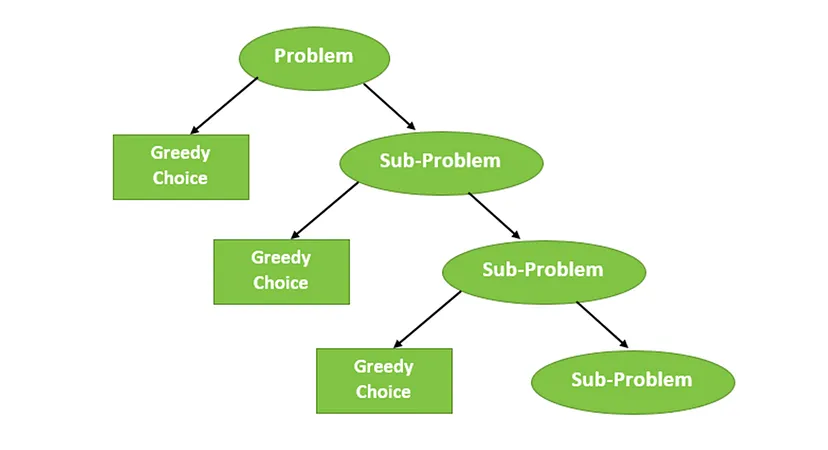

Overview of Topics
In this unit, we explore essential techniques such as Dynamic Programming, Greedy Algorithms, and key sorting algorithms. Each approach is foundational to solving complex computational problems efficiently.
Dynamic Programming (DP) is a technique for solving complex problems by breaking them down into simpler subproblems. It is often used for problems with overlapping subproblems and optimal substructure, such as the Knapsack problem and the Longest Common Subsequence.

Example Code:
def fibonacci(n):
dp = [0, 1] + [0] * (n - 1)
for i in range(2, n + 1):
dp[i] = dp[i - 1] + dp[i - 2]
return dp[n]
Greedy Algorithms make a sequence of choices, each of which looks the best at the moment, to find an overall optimal solution. Examples include the Activity Selection Problem and Huffman Coding.
Example Code:
def activity_selection(activities):
activities.sort(key=lambda x: x[1])
selected = [activities[0]]
for i in range(1, len(activities)):
if activities[i][0] >= selected[-1][1]:
selected.append(activities[i])
return selected
Sorting algorithms like Merge Sort and Quick Sort are essential for data organization and preprocessing in computer science, offering efficient ways to handle data for further processing.

Example Code:
def quick_sort(arr):
if len(arr) <= 1:
return arr
pivot = arr[len(arr) // 2]
left = [x for x in arr if x < pivot]
middle = [x for x in arr if x == pivot]
right = [x for x in arr if x > pivot]
return quick_sort(left) + middle + quick_sort(right)
Interview Questions
Q1: What is the difference between Dynamic Programming and Greedy Algorithms?
Answer: Dynamic Programming solves problems with overlapping subproblems by storing results of subproblems, making it ideal for problems with optimal substructure. Greedy algorithms, on the other hand, make a sequence of locally optimal choices to arrive at a solution and are suitable for optimization problems without needing stored solutions.
Q2: Can you give an example where Greedy Algorithm fails?
Answer: The Knapsack problem can’t be solved optimally with a Greedy Algorithm, as it doesn’t account for all possible combinations, whereas Dynamic Programming does.
Q3: When would you choose Quick Sort over Merge Sort?
Answer: Quick Sort is often faster for in-memory sorting due to its partitioning approach and smaller constant factors, whereas Merge Sort is more stable for external sorting as it consistently requires O(n log n) time.